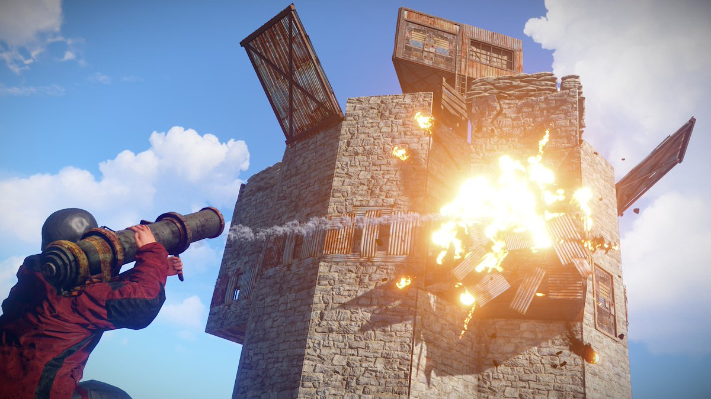

Navigation: Home 7D2D Rust Ark
Rust is a multiplayer survival game that was technically released as a full game in February 8, 2018, but the developer, Facepunch Studios, said "Don't think of this as us claiming that the game is done" when the game left early access. Rust has many similar traits to other survival games, like gathering resources, building, crafting, etc., but what sets this game apart is the keyword multiplayer. When you play Rust, there is always a chance of running into another player who wants to team up. However, there is an even more likely chance that the other player wants to kill you and take your items. On the other hand, you can kill them and take their items if you want. Once you've acquired enough resources and maybe a friend or two, you should set up a base. Then you can raid others bases and defend your own.
An example of late game base raiding
Rating: 5/10
I have never personally played this game, so my opinion is based on what others have told me and from videos of the game that I've watched. The building system seems to make it easy to make a base that is defendable. Guns, the main weapons, appear to be easily obtained, giving newer players on a server a chance to fight against veteran players. There is a counter against high-level players: the attack helicopter. It flies by every 1-2 in game days and shoots at players holding guns or wearing armor, and it can destroy a base while trying to kill a player.
Even though getting to a stable point does not seem to take long, constantly getting killed before that point is a problem that can happen. This would be extremely infuriating and would also prevent you from progressing. Not only do you have to worry about aggressive players, but there are also wild animals like wolves and bears that will attack you on sight. Also, the helicopter attacks you if you're wearing 3 or more pieces of clothing or have a gun in your hotbar. This targets mid-level players as well as high-level ones.